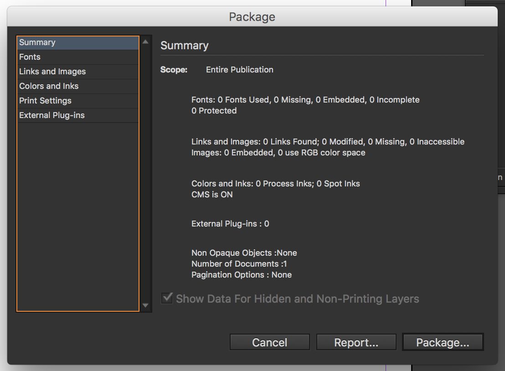

how to send files to your printer so they don't hate you (as much)
The printer-designer relationship is a beautiful, fragile flower. Follow these steps to make your files squeaky clean so you and your printer can live happily ever after.
clean, clean, clean
First, do a quick clean up of your job files. Delete any links or bits of text that are spread around on the pasteboard. Delete working layers that are no longer necessary. Delete unused master pages, style sheets, and colors. Check again for bleed.
To send all of the files associated with a job, use "Package" from the File Menu of InDesign or Illustrator. Be sure to send the fonts too.
Printers prefer to get packaged InDesign files. Changes are often made after the first round of proofs and they can easily modify page layout files.
If you are more comfortable sending a PDF, the best export settings are PDF/X-4 with trim marks and at least .125 bleed.
Printer's imposition software may reject a PDF with security settings, even in the file does not require a password. Avoid any security restrictions on PDFs intended for print. Security is not supported in PDF/X compliant files for this reason.
Send a hard copy and/or a PDF for the printer to check their proof against. Make a folding dummy if applicable.
For complex revisions, you'll want to ask the printer for their file to modify, rather than your own. They've likely already made a bunch of prepress formating changes and it's best to not make them do it again. Trust me, they're more than happy to share their files with you!
When sending back revised files, mark the changes on the proof, change the InDesign file name to BlankBlank_REV, and highlight new or changed links on the directory.
Always zip files before emailing or FTPing them. The Mac's built-in OSX zip utility works very well (control-click or right-click on a file or folder and select "Create archive..." or "Compress...").